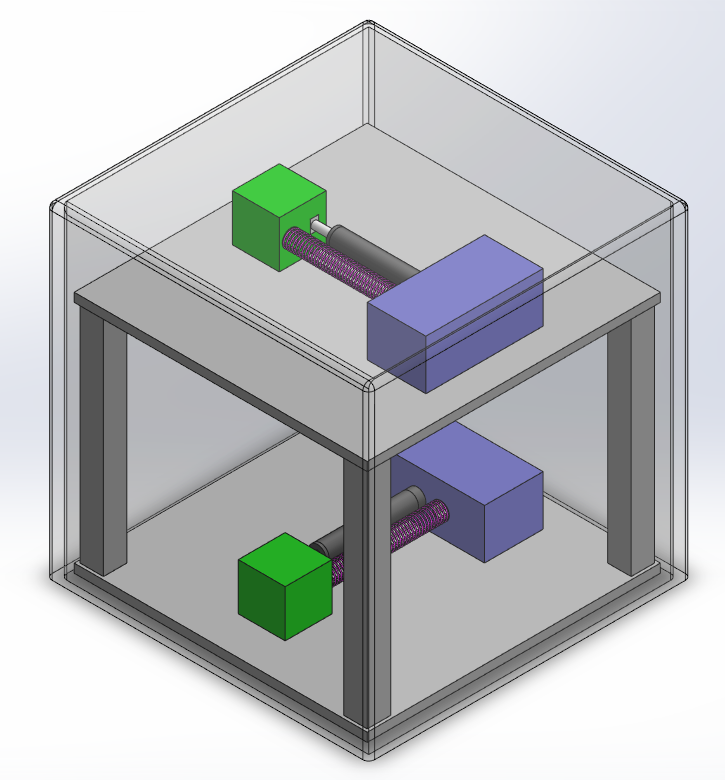
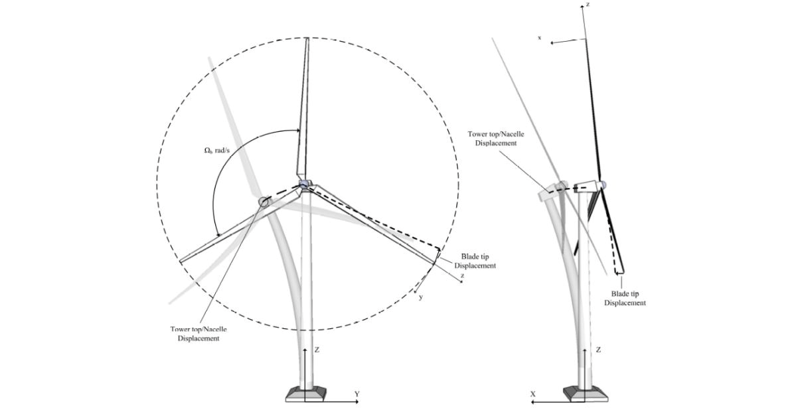
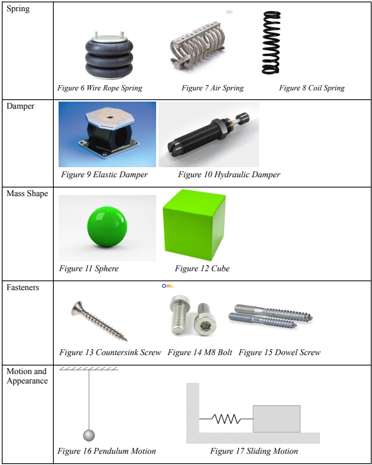
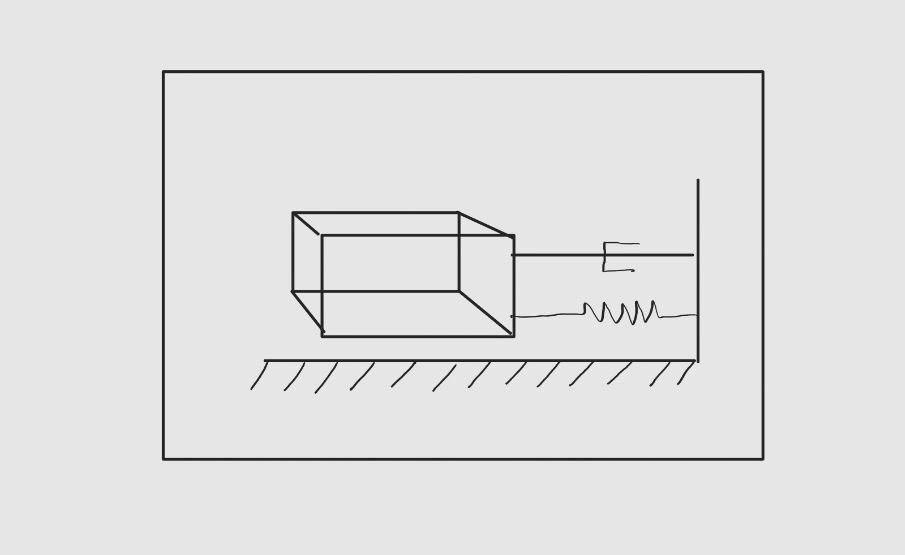
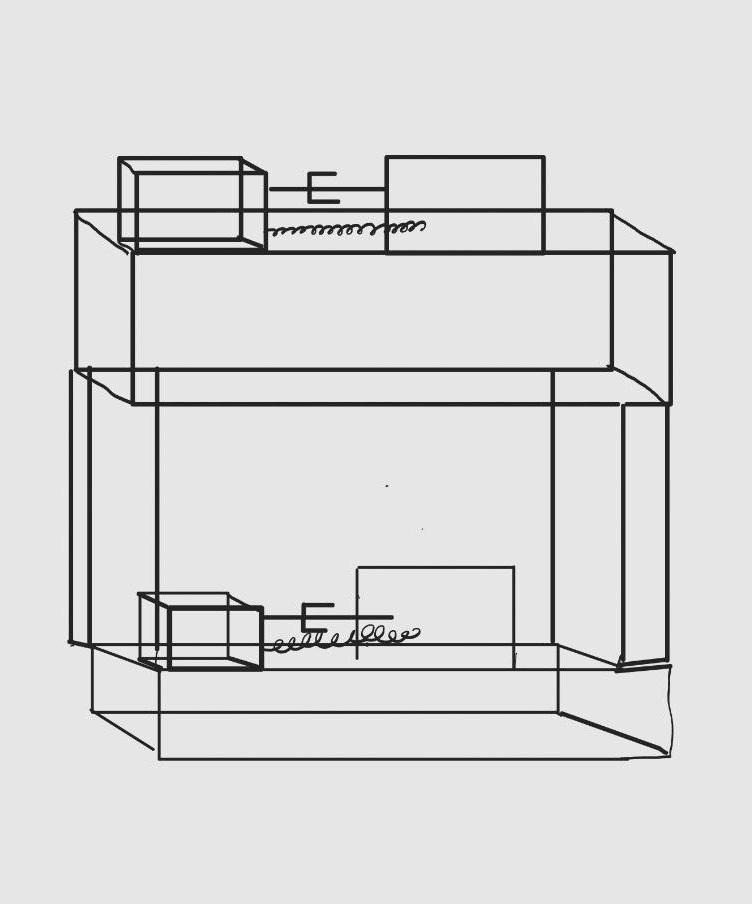
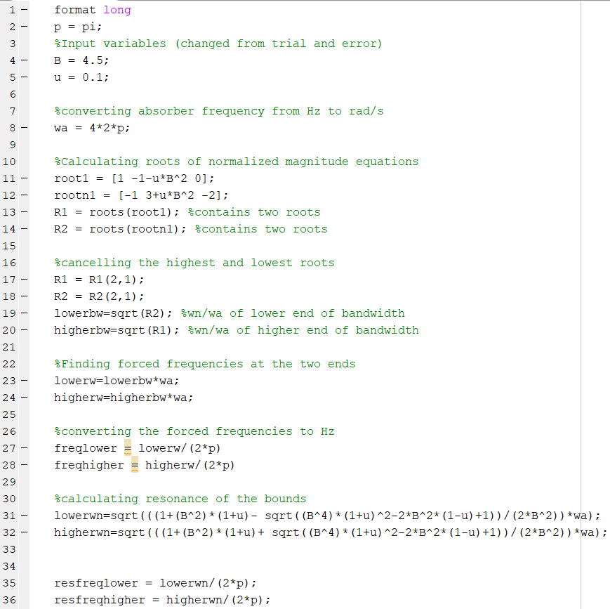
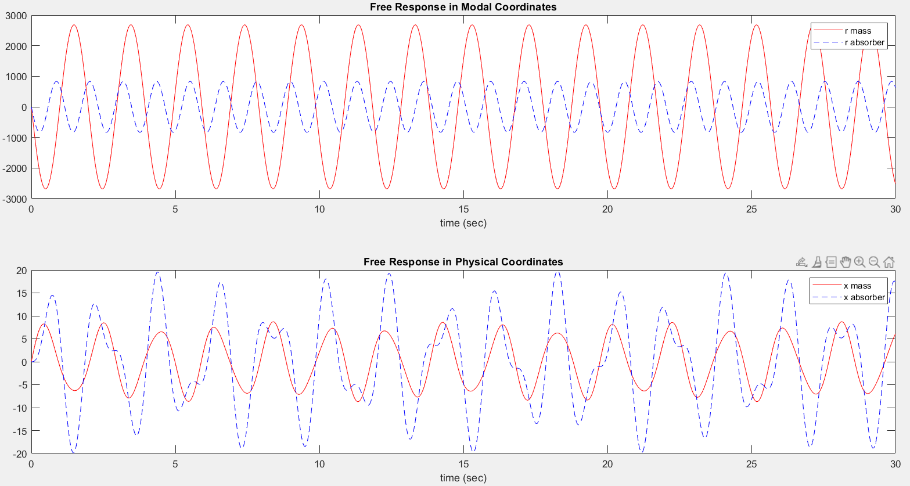

Wind Turbine Vibration Absorber Design
Developed a two-axis vibration absorber concept for reducing in-plane and out-of-plane motion at the top of a wind turbine tower. The project combined engineering requirements, morphological concept selection, tuned mass-absorber theory, analytical sizing, MATLAB simulation, and CAD development to create a perpendicular two-absorber system designed around specified 4 Hz and 6 Hz excitation conditions and a 110 km/h wind-gust impulse.

Reducing Wind-Induced Motion at the Turbine Tower Top
The project focused on vibration of the wind turbine tower and tower-top structure under wind loading. Motion can occur both within the blade plane and perpendicular to it, creating a design problem that cannot be addressed effectively with a single-direction absorber. The objective was to develop an isolation system capable of reducing vibration in both the X and Y directions while remaining practical to integrate inside the available tower-top space.
Structural Concern
Large wind disturbances can move the tower top away from its intended position and can influence the turbine blades and supporting structure through repeated dynamic loading.
Design Objective
Create a vibration absorber that reduces harmonic motion in two perpendicular planes while fitting within the physical and operational constraints of the tower top.

Converting the Design Brief Into Engineering Constraints
The design brief defined both functional and geometric requirements. The absorber had to reduce motion in two directions, withstand the specified wind disturbance, operate around the required excitation frequencies, and fit within the tower-top envelope.
Two-Axis Vibration Reduction
Reduce both in-plane and out-of-plane vibration of the wind turbine tower.
5 m × 5 m × 5 m Envelope
Package the absorber system within the available tower-top space.
Steel Thickness Limit
Respect the specified maximum 5 cm steel thickness for the tower-top structure.
4 Hz & 6 Hz Excitation Study
Evaluate the absorber design around the two harmonic excitation frequencies specified in the project brief.
110 km/h Wind Gust
Analyze an impulse associated with a 110 km/h wind gust applied for 0.5 seconds.
100,000 kg Primary Mass
Size the absorber around the specified 100,000 kg generator / primary system mass.
Selecting the Best Subsystems Before Building the Final Concept
The absorber was divided into spring, damper, mass-shape, fastening, and motion subsystems. Multiple embodiments were compared using a scoring method from −3 to +3. The highest-scoring concepts were then combined into the initial design.
Coil Spring
Selected over wire-rope and air-spring alternatives.
Hydraulic Damper
Selected for controlled resistance and performance under faster motion.
Cubic Mass
Chosen to integrate efficiently within the available packaging space.
M8 Bolts
Selected as the preferred fastening method in the subsystem comparison.
Sliding Motion
Selected instead of pendulum motion for the initial mass-absorber architecture.


Evolving From a Single-Axis Concept to Two Perpendicular Absorbers
The main limitation of the initial design was that a single sliding absorber could only counter motion in one direction. The concept was therefore revised into two independent mass-absorber systems arranged perpendicular to one another so that one could respond to each principal vibration direction.
Two Independent Absorber Axes
One mass-spring-damper assembly operates in one plane while the second assembly operates in the perpendicular plane. This arrangement allows the absorber mechanism to react to wind-induced motion in both X and Y without requiring the two masses to move along the same path.

PTFE Sliding Surface
The revised concept considered a low-friction slider material beneath the moving absorber mass. PTFE was identified in the report as a cost-effective option for improving the sliding motion while remaining compatible with the packaging constraints.
Why the Revision Was Necessary
A single absorber could minimize excitation in only one plane. Adding a second, perpendicular sliding mass allowed the design to address the project requirement for both in-plane and out-of-plane vibration reduction.
Building the Primary-System and Absorber Parameters
The tower was modeled as a steel cantilever-like structure using the specified geometry. The report calculated its cross-sectional moment of inertia, equivalent stiffness, primary-system natural frequency, and absorber mass using a selected mass ratio.
Primary-System Stiffness Model
The report selected a mass ratio of 0.10 from the stated design range of 0.05 to 0.25. With a 100,000 kg primary mass, this produced a 10,000 kg absorber mass for the analytical model.
Coupled Equations of Motion
The design was treated as a coupled two-degree- of-freedom vibration problem consisting of the main wind-turbine structure and the auxiliary absorber mass. The report used a coupling stiffness of approximately 251,327.41 N/m in the absorber equations of motion.
Establishing a Safe Frequency Band and Studying Wind-Gust Response
MATLAB was used to evaluate the normalized vibration-response equations and solve for the roots that define the usable frequency bandwidth. The resulting bounds were compared with the required 4 Hz and 6 Hz excitation cases to check whether resonance occurred at the selected design conditions.
Frequency-Band Analysis
Two quadratic forms of the normalized magnitude equation were evaluated in MATLAB. The extreme roots were used as the lower and upper boundaries of the absorber's design bandwidth before comparison with the specified excitation frequencies.
Resonance Check
The project compared the calculated resonance frequencies against the excitation conditions. The report treated separation between these frequencies as the criterion for avoiding resonance in the selected operating range.


110 km/h Wind-Gust Impulse
The project modeled the 110 km/h, 0.5-second wind gust as an impulse that produces an initial velocity from an initial displacement of zero. The simulation demonstrated why damping is necessary: an undamped model continues to oscillate rather than dissipating the input energy.
Packaging the Two-Axis Absorber Into the Tower-Top Envelope
The revised concept was developed into a physical CAD model that placed the two absorber assemblies inside a structural frame. The arrangement was intended to preserve independent motion in the two directions while remaining within the 5 m cube packaging requirement.

Perpendicular Motion
Two absorber assemblies are oriented at 90 degrees so each can respond to a separate vibration direction.
Compact Packaging
The frame was developed around the required 5 m × 5 m × 5 m tower-top volume.
Selected Components
Coil springs, hydraulic dampers, cubic masses, M8 fasteners, and sliding motion were retained from the concept-selection stage.
Meeting the Core Design Requirements With a Two-Axis Absorber Concept
The final project assessment concluded that the revised two-absorber concept addressed the main requirements of the design brief. The analytical model established the primary-system and absorber parameters, MATLAB was used for dynamic analysis, and the revised CAD concept demonstrated how the mechanism could be packaged inside the available tower-top volume.
Final Design Outcome
The principal improvement over the initial design was the addition of the second, perpendicular absorber. This allowed the final concept to target both principal vibration directions while retaining the selected spring-damper-sliding-mass architecture.
Packaging Limitation
The available tower-top space limits the allowable absorber stroke, mass location, and component size. A larger volume would permit additional design iterations and alternative absorber layouts.
Pendulum Alternative
The report identified a pendulum-motion absorber as a possible future concept because one moving mass could potentially address motion in more than one direction with less material.
Further Iteration
Additional design iterations could refine the absorber mass, spring stiffness, damping, stroke, mounting strategy, and response under a wider range of wind-loading conditions.